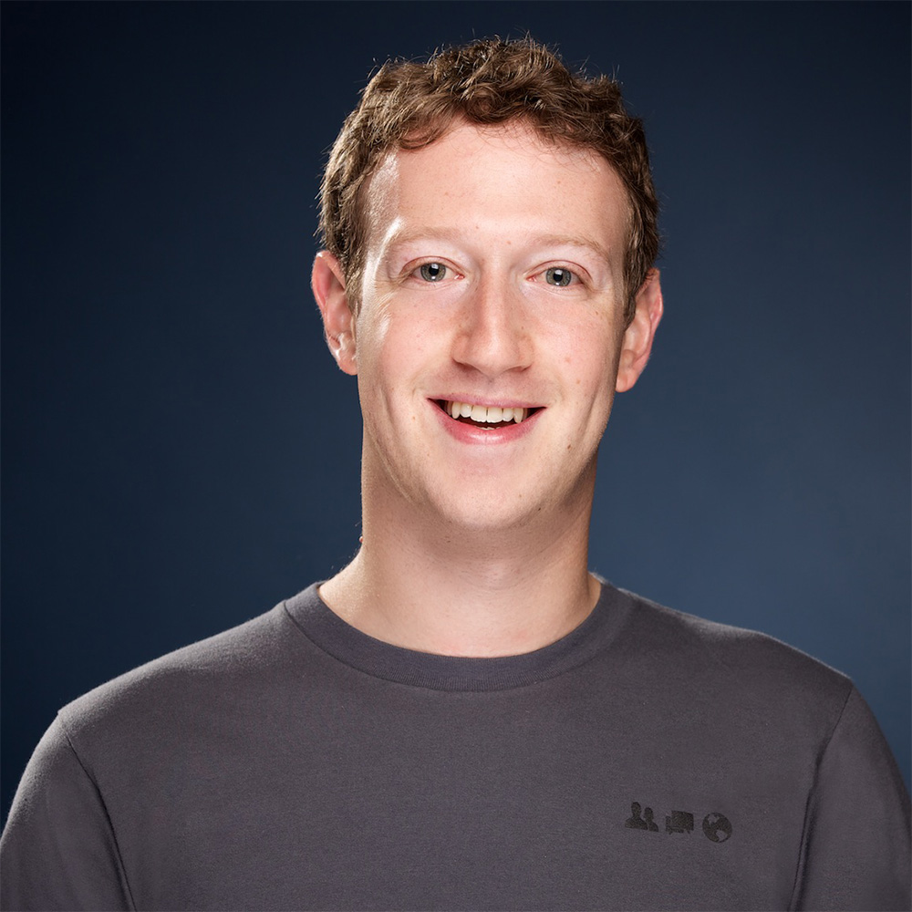

The founder of facebook
Zuckerberg launched Facebook from his Harvard University dormitory room on February 4, 2004 with college roommates and fellow Harvard students Eduardo Saverin, Andrew McCollum, Dustin Moskovitz, and Chris Hughes.

[7] The group then introduced Facebook to other college campuses. Facebook expanded rapidly, reaching one billion users by 2012. During this time, Zuckerberg became involved in various legal disputes brought by his friends and cofounders, who claimed they were due a share of the company based upon their involvement during its development phase.